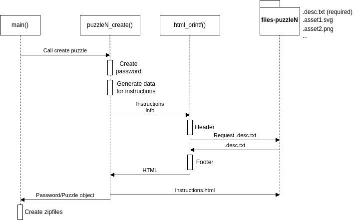
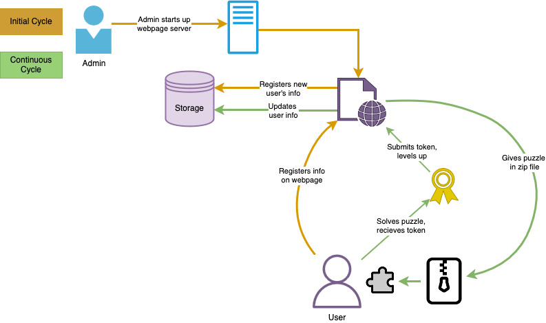

Pointless Project
Table of Contents
- 1. Introduction
- 2. Project Setup
- 3. Puzzle Creation Framework
- 4. Implementing a New Puzzle
- 5. Current Puzzles
- 6. Utilities
- 7. Graphics
- 8. Web Server
- 9. Code Coverage
- 10. Automated Tests
- 11. Documentations
- 12. Issues
- 13. TODO Future Plans
- 14. Contact
NOTE: Open README.html in a browser to view this document
in a much better format.
1 Introduction
The point(less) of the Pointless Project is to create a compelling, puzzle-filled challenge inspired by the Synacor Challenge, but targeted at a pre-college audience. The goal is to allow the School of Computing (SoC) to engage potential students during the time they are selecting a college by providing opportunities to remain in contact, encourage curiosity, and engage in creative problem solving while learning about computing and the SoC.
Playing through the Synacor Challenge will provide the clearest understanding, however reading someone else's "travel log" is also insightful. The key components to success include:
- a personalized download containing the complete game
- the ability to play completely offline
- a series of different but related logic puzzles and riddles
- multiple opportunities "along the way" to be recognized for their problem solving skills.
2 Project Setup
2.1 Installation
2.1.1 Linux (recommened)
For Debian based distributions, run:
sudo apt update sudo apt install g++ libboost-all-dev libzip-dev php-cli gcovr emacs
You will also need a way to open the zipfiles. We have found the best programs to use
is file-roller and pcmanfm (or some other file manager such as nautilus). But use whatever you see fit.
sudo apt update sudo apt install file-roller pcmanfm
For Arch based distributions, run:
sudo pacman -S gcc sudo pacman -S boost sudo pacman -S libzip sudo pacman -S pcmanfm sudo pacman -S file-roller
2.1.2 Windows
2.1.3 Mac
Unfortunately, we have not been able to get the project built on MacOS. We have decided the the best option for Mac users is to choose a virtual machine to run some Linux distribution.
Here are some popular VM's:
- QEMU (my favorite but harder to set up)
- Virtualbox (easiest but slowest)
- VMware (high quality but paid)
There are many more out there, so choose whichever one suits you best.
Once a VM has been chosen, choose your favorite flavor of Linux and download its ISO and have the VM use it, then follow the installation on Linux.
2.2 Building
First, clone the repository if not done already:
git clone https://www.github.com/Lunatic-Labs/pointless-project.git/
Go into the src/ directory:
cd ./puzzle-code/src/
Then use the Makefile to build the project:
make <opt>
where
optis one of:
all→ perform allMakefileflagsclean→ removes all object files and all generated zipfilescleanzip→ removes all generated zipfiles
Building the project will create a directory called obj where all object files
are located as well as create a zipfiles directory where all puzzle zipfiles are
generated. You can now inspect and solve the puzzle(s) by choosing the appropriate zipfile.
3 Puzzle Creation Framework
It is obvious to see that there are a lot of directories in this project, and not all of them contain code. In fact, most of these directories contain the necessary resources for their respective puzzle.
Any directory that starts with files- are resource directories. They contain (at least) the .desc.txt
for each puzzle as well as any supporting files that the puzzle needs (other HTML files, images, etc).
Any support files that are prefixed with `.` will not be included in the zipped-up puzzle. Files that do not have this prefix will be included in the zipfile.
Each puzzle's generated HTML page (instructions.html) has a specific structure:
| Instructions.html |
|---|
| Header (generated) |
| Body (.desc.txt) |
| Footer (generated) |
The HTML Header and Footer are located in puzzle-code/html-txt/resources/ and do
not need to be touched (unless changes are needed).
Below is a UML diagram of how a puzzle gets created.

Figure 1: Puzzle Creation UML
4 Implementing a New Puzzle
Implementing a new puzzle is increadibly easy with how we implemented it. Here are the steps to take when doing so.
4.1 Puzzle Resources Directory
Start by creating a new directory in src/ and name it files-<new puzzle name>.
Then inside of there, create a new file called .desc.txt. This is where the instructions,
hints, and other info about the puzzle is stored. Everything in this file will be put into an HTML file,
so make sure that it follows the HTML rules.
In order to transfer information easily from C++ to HTML/Javascript, we use a special delimiter in this file,
namely %DELIM. For example, if I need to pass a password and an array that is generated in C++
into this .desc.txt file, I would do something like:
<script> let password = %DELIM; let array = [%DELIM]; </script>
It is then the job of C++ to "stringify" the required information to pass to .desc.txt.
In order to make the explanation more easy to follow, I will make a new puzzle called "fib",
where the point(less) of it is to have the user find the nth number of the fibonacci sequence.
cd ./puzzle-code/html-txt/ mkdir files-fib && cd files-fib echo "What is the <b>%DELIM</b>th number in the fibonacci sequence?" > .desc.txt
4.2 Puzzle Implementation
Once the above step is done, create a new file called <puzzle name>-puzzle.cpp
in puzzle-code/src/ and put the entrypoint of the function that will create the puzzle.
We will also need to include ./include/puzzle.h to have access to the Puzzle object.
#include "./include/puzzle.h"
Puzzle fib_puzzle_create(long seed)
{
return {"../html-txt/files-fib", "", "changeme", {}}; // NOTE: "../html-txt/files-fib" is the puzzle requirements directory from the previous step.
}
The return value of this function is a Puzzle object. It is defined as:
struct Puzzle {
// The filepath to the appropriate directory
// The content of the instruction.html pages
// that contains all of the information needed
// for the puzzle.
std::string contents_fp;
std::string contents_html;
std::string password;
std::optional<std::string> extra_info;
};
So we are returning a new puzzle where
- requirements = "../html-txt/files-fib"
- html content = ""
- password = "changeme"
- extra info = None
The html content field is a string for the html content of the puzzle.
The password field is what will set the password for the next zipfile layer.
The extra_info field is purely for debugging and is strictly used for the side
effect of printing when running the application. Nothing that gets put into it will
be displayed/used in the final puzzle in the zipfiles.
Now it's time to actually create the solver for the puzzle. I will create a fib function that will find the number.
#include "./include/puzzle.h"
#include "./include/utils.h" // utils_rng_roll, utils_html_printf, utils_generate_file
static int fib(int n)
{
if (n < 2) return n;
return fib(n-1) + fib(n-2);
}
Puzzle fib_puzzle_create(long seed)
{
// Get a random number in the range 3..=10.
int fibnum = utils_rng_roll(3, 10, seed);
// Get the solution to the puzzle.
int password = fib(fibnum);
// Generate the HTML content to be displayed to the user
std::string html_content = utils_html_printf("Fibonacci Sequence",
"../html-txt/files-fib/.desc.txt",
{std::to_string(fibnum)});
// Create the instructions.html
utils_generate_file("../html-txt/files-fib/instructions.html", html_content);
// Finally return the Puzzle object.
return {"../html-txt/files-fib", html_content, std::to_string(password), {}};
}
Now that the implementation is done, add the signature of Puzzle fib_puzzle_create(long) into .puzzle-code/src/include/puzzle.h.
4.3 Using the Puzzle
In the main function in main.cpp, there is some code that looks like:
std::vector<Puzzle> puzzles = {
math_puzzle_create(seed),
color_puzzle_create(seed),
pixel_puzzle_create(seed),
maze_puzzle_create(seed),
encrypt_puzzle_create(seed),
based_puzzle_create(seed),
ast_puzzle_create(seed),
fin_puzzle_create(seed),
};
Put the new puzzle that was created in the spot that you want it to appear in the nested zipfiles. For example, if I want it to be the third puzzle that the user solves, I would do:
std::vector<Puzzle> puzzles = {
math_puzzle_create(seed),
color_puzzle_create(seed),
fib_puzzle_create(seed), // Added it here
pixel_puzzle_create(seed),
maze_puzzle_create(seed),
encrypt_puzzle_create(seed),
based_puzzle_create(seed),
ast_puzzle_create(seed),
fin_puzzle_create(seed),
};
Now run make all and these things will happen:
- The
files-<puzzle name>directories will all generate a file calledinstructions.html..puzzle-code/src/zipfiles/will be populated with zipfiles.
The entire project will be located in .puzzle-code/src/zipfiles/puzzle1.zip, as it contains
the zipped files puzzle1..puzzleN. The reason why we also generate the other puzzles
outside of puzzle1.zip, is because it allows for easy testing without having to go through the entire zipfile structure.
5 Current Puzzles
These are the currently implemented puzzles. Each one has three entries.
- Adjustable Variables: Variables can be adjusted to make the puzzle harder/easier
- Description: What the puzzle does
- RNG: What exactly in the puzzles are random
5.1 Math
Adjustable Variables:
MATH_MIN1MATH_MAX1MATH_MIN2MATH_MAX2
Description:
This puzzle serves as the Hello, World! puzzle. It introduces the user to reading the description, solving the puzzle, and inputing the password.
We prompt the user to solve a very simple math question in the form of \(a\) + \(b\).
RNG:
- \(a\), \(b\)
5.2 Color
Adjustable Variables: None
Description:
This puzzle asks the user to enter the hex value of one of Lipscomb's colors (purple or yellow). The goal of this puzzle is to teach the user about hex values. We hope that the user does some simple Googling to find this website to find the colors.
RNG:
- purple | yellow
5.3 Pixel
Adjustable Variables:
MAX_LOOP(must change number of html elements to match)
Description:
The goal of this puzzle is to retest the user on their knowledge on this website hexadecimal color codes learned in the "Color" puzzle. The hex codes come directly from the bison svg included in the pages header.
The user is shown a hex code with along with a number.
#331E54 = 66
The number corresponds to the number of pixels of the given hex code found in the bison svg. Following the first code/number pair, there are two more rows. The first row will contain two hex codes, an "X" denoting multiplication, and a number. The number is the product of the pixel count related to the respective hex codes.
#F4AA00 X #331E54 = 396
The final row contains three code/number pairs and a question mark. The user must find the product.
#FFFFFF X #F4AA00 X #000000 = ?
RNG:
- The order of hex codes in the arithmetic
5.4 Maze
Adjustable Variables:
MAZE_SIZE(must be an odd number)
Description:
The goal of this puzzle is to teach the user about run-length encoding. This encoding algorithm places numbers before the letters, while we expect the numbers to be after. We do this because it more closely matches function calls in the form of \(f \space x \rightarrow n\).
We randomly generate a maze as an SVG and have the user navigate it using the following rules:
| Instruction | Direction |
|---|---|
| u | up |
| d | down |
| l | left |
| r | right |
However, the answer is not just the path that you must take (uulrrrd for example), you must apply the run-length encoding algorithm to it. So the answer would be: u2lr3d.
RNG:
- The maze that is presented.
5.5 Encrypt
Adjustable Variables:
ENCR_WORDSENCR_OPSENCR_ROTATIONS_MINENCR_ROTATIONS_MAXENCR_CHANGE_MINENCR_CHANGE_MAX
Description:
This puzzle challenges the user by decrypting the password. We present them with a list of steps used to encrypt it, and they must undo it to get the password.
The following things can happen:
- shift all characters by \(i\) to either the right \((r)\) or left \((l)\)
- swap the characters at index \(j\) and \(k\)
- increase each fourth letter alphabetically by \(n\).
RNG:
- The instructions used
- \(i\), \(r\), \(l\), \(j\), \(k\), \(n\)
5.6 Intro Base
Adjustable Variables:
MAX_HEX_ANS_LEN
Description:
The goal of this puzzle is to introduce the player to number bases and base conversion. The puzzle contains a visual representation of numbers with different bases called a lightbox. Using these visual representations of bases, the player must convert a lightbox from base 16 to base 10.
RNG:
- $num
- lightbox placements
5.7 Rematches
The "rematch" puzzles serve as the point in the project where there is a noticable difficulty spike. It interrupts the linear nested puzzle format by having the user solve three harder versions of previous puzzles. Each one of these rematch puzzles gives a piece of the password to advance past this rematch section.
5.7.1 Maze Rematch
Adjustable Variables:
MAZE_SIZE(must be an odd number)
Description:
This is the harder version of the Maze puzzle. We provide cryptic instructions in with the goal of having them inspect the page and navigate to the console. Once they type "instructions" a list of function calls are presented. The user then needs to navigate the maze \((M_1)\) using these function calls and must explore two other mazes \((M_2, M_3)\) with items that need to be picked up. Once these items are picked up, they then need to go to \(M_1\) and go to the yellow tile. The password is then presented when they type "exit()".
RNG:
- \(M_1, M_2, M_3\), password
5.7.2 Encrypt Rematch
Adjustable Variables:
ENCR_WORDS
Description:
This is a harder version of the Encrypt puzzle. It presents the user with an encrypted password as well as a not-so-helpful-at-first order of steps that were taken. The user must interact with a textbox on screen and try to figure out that pattern in which the buttons mess with their input. Once they have figured it out, they must decrypt the password.
RNG:
- The password
5.7.3 Based Rematch
Adjustable Variables:
CELLS(must modify table in .desc.txt to match)
Description:
The goal of this puzzle is to teach the user about base conversion. They are given a description of three Pointless-created bases. The actual instructions follow in a story-esque fashion, here they are simplified:
- Convert values to base 10
- Sum them up for each row
- Convert the sum to base 2
- Check if LSB is on or off
- Save the resulting LSB values
- Take that base 2 number and convert it back to base 10 (the rightmost column)
They are then shown a table with values occupying each cell, except for the right most cell in each row.
| 24 | F | 3 | ? |
| 11 | 41 | 41 | ? |
| A | 18 | 27 | ? |
| 35 | F | E | ? |
RNG:
- The values in each cell
5.8 BST
Adjustable Variables:
ROOT_MINROOT_MAX
Description:
The player is presented with a root number. The goal is to create a binary search tree (BST), and trace the route from the root node to the destination by solving the expression set with your root number.
These are the possible expressions that can show up with examples:
- addition: \(a\) + \(b\)
- subtraction: \(a\) - \(b\)
- multiplication: \(a\) * \(b\)
- division: \(a\) / \(b\)
- square root: √(\(a\))
- comparisons: \(a\) > \(b\)
- hexadecimal: FFFFFF
- complex expression: √?((\(a\) -+ \(b\)) +- (\(c\) *||/ \(d\)))
RNG:
- root
- expressions in each path
- path from root → destination
5.9 Scrapped Based Rematch
Adjustable Variables:
NUM_VALS(must modify html elements to match)VAL_SZ
Description:
This is a harder version of the Based puzzle that also incorporates sorting. The user is presented with an instructions page outlining the challenge. Hidden on the page are three buttons that, when clicked, enumerate the Pointless-created bases that they will encounter in the actual puzzle.
The bases:
- Symbolic 8:
!, @, #, $, %, ^, &, * - Glyphic 16:
{, }, [, ], (, ), `, >, a, b, c, d, e, f, g, h - Mystic 36:
|, ~, ,, /, ?, *, +, =, A, B, C, D, E, F, G, H, I, J, K, L, M, N, O, P, Q, R, S, T, U, V, W, X, Y, Z
Upon clicking the "Enter" button, they will be brought to the actual puzzle. There are NUM_VALS number of values, each of length VAL_SZ.
Clicking on these values places them into the container in the center of the page. The user must fill this container with the values sorted from smallest to greatest.
Doing so correctly will prompt a modal to appear containing the key.
RNG:
- The values
5.10 Graph Paper Robot Puzzles
The idea behind this trilogy of paper robot puzzles, is that we want the player to bring out a piece of graph paper and something to color the squares with and do this all on paper. We want to teach the player about certain topics in the first two paper robot puzzles (state, memory etc.) then incorporate those ideas in the last one.
5.10.1 Binary Addition (Graph Paper Robot I)
Adjustable Variables:
TAPE_WIDTHTAPE_HEIGHTREQ_CARRIES
Description:
The player is presented with a 2x12 grid of (mostly) red \((r)\) and green \((g)\) pixels. The red pixels means 0 and green means 1. Then, following the rules in the instructions, the player should color in the correct squares with the correct color. The idea of this puzzle is that the player is actually performing binary addition.
RNG: \(r, g\) pixels
5.10.2 Logic Gate (Graph Paper Robot II)
Adjustable Variables:
enum Gate(needs implementation)input length(unimplemented, needs to be a power of 2)
Description:
NOTE: This puzzle is currently in development, so the description is sparse on purpose.
The player is presented with a grid of colors \((g)\) which are (unknown to the player) logicgates. These logic gates will be read in by the robot as instructions. The first instruction is in bottom left. Then the robot reads to the right, and loops back to the left when it reaches the end. (like reading a book, but bottom to top) There is another robot managing the memory, which are the colored circles \((c)\). When the first robot reads in a gate, the memory robot pops off the two bits on the left. The logic gate is then evaluted with those bits, and the result pushed on the right end of memory.
The answer is every evaluation in order.
RNG: \(g,c\)
5.10.3 TODO (Graph Paper Robot III)
Currently unimplemented
6 Utilities
Like the name implies, these are very helpful utility functions that are available.
6.1 Externs
extern uint32_t FLAGS;
6.2 Typedefs
typedef std::vector<std::string> strvec_t;
typedef const std::string filepath_t;
6.3 Macros
ANS_ONLY
Disables artifacts from being created
SET_SEED
Whether or not to use a set seed
NO_HDR
Makes it so that the header of a puzzle will not be generated
NO_FTR
Makes it so that the footer of a puzzle will not be generated
BISON_GRID
Makes the pixelated bison generate with a grid
6.4 Functions
void utils_generate_file(filepath_t filepath, std::string output_body);
Generates a file with the given output_body. Will be written to the filepath.
int utils_rng_roll(int min, int max, long &seed);
Generates a random number between min and max inclusive using seed.
int utils_roll_seed(void);
Rolls a seed using the current time.
strvec_t utils_walkdir(filepath_t path);
Returns a vector of strings containing the names of all files in path.
Recursively walks all subdirectories and will ignore all files/dirs that start with ..
void utils_zip_files(filepath_t out_file_name, strvec_t file_names, std::string password="");
Zips the given files into a single file out_file_name with file_names and the password password.
std::string utils_file_to_str(filepath_t filepath);
Returns the contents of filepath as a string.
std::string utils_html_printf(std::string title, filepath_t desc_filepath, strvec_t args);
Creates an HTML body. All occurrences of "%DELIM" in the text of desc_filepath will be
replaced with the given args in order. It is similar to printf.
NOTE: You can have this function not insert a header if the flag NO_HDR is set prior
to calling this function. The same is true for the footer if NO_FTR is set.
7 Graphics
This section includes a bunch of utility functions dedicated to graphics.
7.1 Structs
struct Pixel
struct Image
struct Svg
struct Svg::Shape
struct Svg::Shape::Rect inherits struct Svg::Shape
struct Svg::Shape::Circle inherits struct Svg::Shape
7.2 Operator Overloads
Pixel &Image::operator()(size_t i, size_t j);
7.3 Functions
NOTE: We have moved away from PPM files and focus more on SVGs.
Image(size_t w, size_t h);
Constructor for an Image. Sets width and height to w and h and all pixels to transparent.
Prototype: include/graphics.h
Implementation: include/graphics.h
Svg(float w, float h);
Constructor for an Svg. Sets with width and height to w and h.
Prototype: include/graphics.h
Implementation: include/graphics.h
template <class Shape> void Svg::add_shape(Shape shape);
Appends a shape to the SVG.
Prototype: include/graphics.h
Implementation: include/graphics.h
std::string Svg::build(void);
Returns a string of all shapes in valid SVG format to embed into HTML.
Prototype: include/graphics.h
Implementation: include/graphics.cpp
Svg::Shape::Rect(float _x, float _y,
float _width, float _height,
std::string _fill,
std::optional<std::string> _stroke = {},
std::optional<std::string> _html_classname = {});
Constructor for Svg::Shape::Rect.
Sets the position of the shape to _x and _y, it's width and height to _width and _height,
and it's color as _fill.
Optionally can set _stroke (use this if you want a border) and _html_classname (if you want
to modify it in HTML/JS).
Prototype: include/graphics.h
Implementation: include/graphics.h
Svg::Shape::Circle(float _x, float _y, float _radius, std::string _fill,
std::optional<std::string> _stroke = {},
std::optional<std::string> _html_classname = {});
Constructor for Svg::Shape::Circle.
Sets the position of the shape to _x and _y, it's radius to _radius,
and it's color as _fill.
Optionally can set _stroke (use this if you want a border) and _html_classname (if you want
to modify it in HTML/JS).
Prototype: include/graphics.h
Implementation: include/graphics.h
std::string Svg::Rect::make() const
Creates an SVG line of a Rect.
Prototype: include/graphics.h
Implementation: include/graphics.cpp
std::string Svg::Circle::make() const
Creates an SVG line of a Circle.
Prototype: include/graphics.h
Implementation: include/graphics.cpp
Svg graphics_gen_svg_from_image(Image &img, float pixel_size);
Creates an Svg from img using the scaling of pixel_size.
NOTE: all "dead" pixels are set to transparent.
void graphics_create_ppm(Image &img, const char *filepath);
Creates a PPM image from img and saves it to filepath.
Image graphics_scale_ppm(Image &img, size_t scale);
Scales img by scale and returns a new Image.
NOTE: This function is extremely slow as it runs in \(O(n^4)\) time.
8 Web Server
8.1 Description
The main goals of the webpage are puzzle download, user registration, and user tracking. New users are to put their info into the first page, which is saved to a csv file. (Each new user will have a default level of 0) User downloads the puzzle via php and plays offline. In order to level up, user is to log in to a separate page where they can submit the hidden tokens and update their level in the csv file via POST request.

Figure 2: Webpage User Flow UML
8.2 How to start
Change directories to web-server/
cd ./pointless-project/web-server
Start localhost
php -S localhost:8000
NOTE: Keep terminal running to track all requests going to web-server.
8.3 Integration Test format
8.3.1 Description
Tests for the webpages will use bash scripting and are found in the integrated-tests directory.
- NOTE: Always run these tests in the integrated-tests directory. This is to make sure that the
cd ..command makes the current working directory (cwd)web-server.
- Naming format:
- test-
webpage-FeatureBeingTested.sh
- test-
- Testing format:
#!/bin/bash cd .. touch ./integrated-tests/<name-of-test>-output-$cdt.txt # run wget to run action on URL whether it be a GET or POST request and output that to output.txt # if-else statements to find desired outcomes using '! grep' # delete output.txt (rm ./integrated-tests/<name-of-test>-output-$cdt.txt) and any edits to csv (sed -i '$d' ./includes/contact-data.csv)
NOTE: Whenever running tests that manipulate
contact-data.csvin any way, shape, or form, be sure to include the following bash code.# Placed at beginning of test Create a copy of orignal data for verification cp ./includes/contact-data.csv ./integrated-tests/original-data-$cdt.csv # ..... test body ....... # Check integrity of contact-data.csv if diff ./includes/contact-data.csv ./integrated-tests/original-data.csv; then echo 'Changes to contact-data.csv?: No, data is intact.' rm ./integrated-tests/original-data_$current_datetime.csv else echo 'Changes to contact-data.csv?: !!contact-data.csv compromised!! Check for changes!!' fiTo run the tests, type
./the-desired-script.shinto the terminal while in./web-server/integrated-testsdirectory.
8.4 Sandbox directory
This directory is to be used for testing any new code or methods, so as not to interfere with any of the main code. Feel free to delete any files in this directory if needed.
8.5 Future goals
- Consistent dark mode between pages
- Functioning download button in download.php
- Goal: user retrieves 7zip file from webpage via php
- This is where you connect the web-server code with the puzzle-code.
- What's on the current page is just a demo.
- Goal: user retrieves 7zip file from webpage via php
9 Code Coverage
Go into the src/ directory:
cd ./puzzle-code/src/
Then use the Makefile to build the project:
make <opt>
where
optis one of:
all→ perform allMakefileflagsclean→ removes all object files and all generated zipfilescleanzip→ removes all generated zipfiles
NOTE: main would need to run at least once for the code coverage to work
Then do:
make coverage
coverage→ gives a long list of file names and percentage of lines executed in the terminal
10 Automated Tests
Go into the test/ directory:
cd ./puzzle-code/test/
Then use the Makefile to build the project:
make <opt>
where
optis one of:
all→ perform allMakefileflags and starts the automated testing processclean→ removes all object files
10.1 Implementing New Tests
10.1.1 Test Implementation
Create a new file called <puzzle name>-puzzle-test.cpp
in test/ and put the entrypoint of the function that will create the puzzle.
We will also need to include ../src/include/puzzle.h to have access to the Puzzle object,
and ./include/test.h to have access to the different puzzle test functions.
#include "./include/test.h"
#include "./include/file.h"
#include "../src/include/puzzle.h"
bool fib_puzzle_test()
{
Puzzle test;
std::string header_content = file_contents("../html-txt/resources/header.txt");
std::string footer_content = file_contents("../html-txt/resources/footer.txt");
size_t found;
std::cout << "starting fib puzzle tests" << std::endl;
// Different assert() tests
std::cout << "fib puzzle test successful\n" << std::endl;
return true;
}
Now it's time to create an automated test for puzzle. I will create a fib test function to see if the fib function works correctly.
#include <iostream>
#include <string>
#include <cassert>
#include "./include/test.h"
#include "./include/file.h"
#include "../src/include/puzzle.h"
#include "../src/include/utils.h"
bool fib_puzzle_test()
{
Puzzle test;
std::string header_content = file_contents("../html-txt/resources/header.txt");
std::string footer_content = file_contents("../html-txt/resources/footer.txt");
size_t found;
std::cout << "starting fib puzzle tests" << std::endl;
test = fib_puzzle_create(1);
assert(test.password == "1");
found = test.contents_html.find(header_content);
assert(found != std::string::npos);
found = test.contents_html.find(footer_content);
assert(found != std::string::npos);
test = fib_puzzle_create(5);
assert(test.password == "5");
found = test.contents_html.find(header_content);
assert(found != std::string::npos);
found = test.contents_html.find(footer_content);
assert(found != std::string::npos);
test = fib_puzzle_create(10);
assert(test.password == "55");
found = test.contents_html.find(header_content);
assert(found != std::string::npos);
found = test.contents_html.find(footer_content);
assert(found != std::string::npos);
test = fib_puzzle_create(15);
assert(test.password == "610");
found = test.contents_html.find(header_content);
assert(found != std::string::npos);
found = test.contents_html.find(footer_content);
assert(found != std::string::npos);
std::cout << "fib puzzle test successful\n" << std::endl;
return true;
}
Now that the implementation is done, add the signature of bool fib_puzzle_test(); into ./puzzle-code/test/include/test.h.
10.1.2 Using the Test
In the main function in main.cpp, there is some code that looks like:
std::vector<bool> tests = {
math_puzzle_test(),
color_puzzle_test(),
pixel_puzzle_test(),
maze_puzzle_test(),
based_intro_puzzle_test(),
encrypt_puzzle_test(),
rematch_puzzle_test(),
rematch_maze_puzzle_test(),
rematch_encrypt_puzzle_test(),
rematch_based_puzzle_test(),
binary_addition_puzzle_test(),
logicgate_puzzle_test(),
bst_puzzle_test(),
fin_puzzle_test(),
};
Put the new test that was created in the spot that you want it to appear in the testing process. For example, if I want it to be the third test that the program will test, I would do:
std::vector<bool> tests = {
math_puzzle_test(),
color_puzzle_test(),
fib_puzzle_test(), // Added it here
pixel_puzzle_test(),
maze_puzzle_test(),
based_intro_puzzle_test(),
encrypt_puzzle_test(),
rematch_puzzle_test(),
rematch_maze_puzzle_test(),
rematch_encrypt_puzzle_test(),
rematch_based_puzzle_test(),
binary_addition_puzzle_test(),
logicgate_puzzle_test(),
bst_puzzle_test(),
fin_puzzle_test(),
};
Now run make all and these things will happen:
- If
./puzzle-code/test/obj/is populated, then remove every object file in it.- The
<puzzle name>-puzzle.cppcode will be compiled with the tests.- Once compiled, the test will run automaticly.
11 Documentations
Documentation for the Pointless Project are reliant on two files:
README.orgREADME.html
NOTE: OLD-README.md is currently not in use and out-dated.
However, only the README.org has to be edited.
11.1 Editing README.org
These are some of the most important commands in org:
=*NOTE*: Important information= =* Section Name= =** Sub-section Name= =*** Sub-section Name= =* TODO= =#+begin_src <language>= =#+end_src= =#+begin_quote= =#+end_quote=
Documentation for .org files are here.
11.2 Exporting README.org File to an .html File
In order to export .org files into .html files, we use emacs. To run emacs simply run this into your Linux terminal:
emacs
Then set the file location to view the README.org file:
C-x C-f ./pointless-project/README.org
Then when ready to export, use these commands:
M-x org-export-dispatch h h
When closing emacs:
C-x C-c
M→ altC→ ctrl-x→ The key needed to be press while holding alt or ctrl.
NOTE: Any other README files that are not OLD-README.md, README.html or README.org needs to be deleted.
12 Issues
- No support for building on MacOS
- Issues with accessing the zip files on MacOS and Linux without file-roller. It immediately prompts for a password even though it should not.
- There is no storyline.
- The puzzle difficulty does not scale smoothly. The earlier puzzles should be harder.
- The Maze Rematch puzzle needs a better description.
- Missing required "whitty" quotes on all puzzles.
- The rematch puzzles produce "pieces" of the final password, and the user must concat them together. However, this does not work if the user decides to do them in a non-linear order. Maybe just add the numbers together?
13 TODO Future Plans
- Design Graph Paper Robot Puzzle III.
- Have the website comunicate with the puzzle code.
- Have an automatic emailer that sends emails to Dr. Towell.
- Have the tokens work with the website, and update the csv file.
14 Contact
Zachary Haskins - zdhdev@yahoo.com Github
Turner Austin - tcaustin@mail.lipscomb.edu Github
Mekeal Brown - mtbrown@mail.lipscomb.edu Github
Steven Yassa - seyassa@mail.lipscomb.edu Github
Jordan Hasulube - jdhasulube@mail.lipscomb.edu Github
Michael Hernandez-Lara - mahernandezlara@mail.lipscomb.edu Github
John Tabelisma - jmtabelisma@mail.lipscomb.edu Github